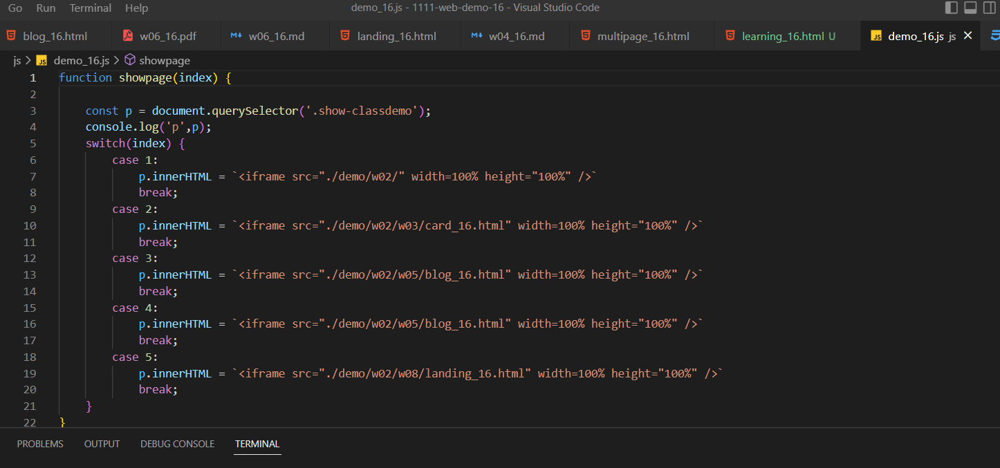
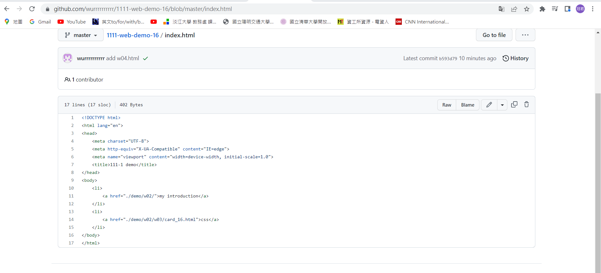
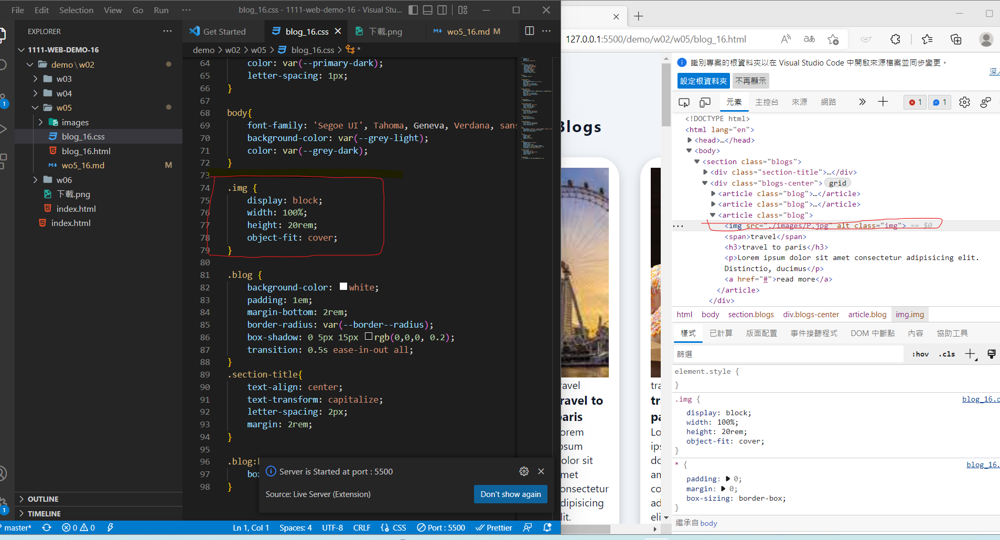
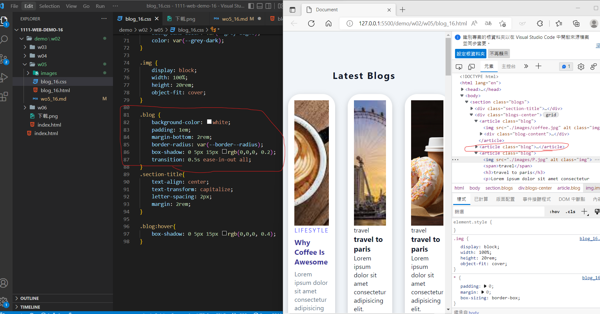
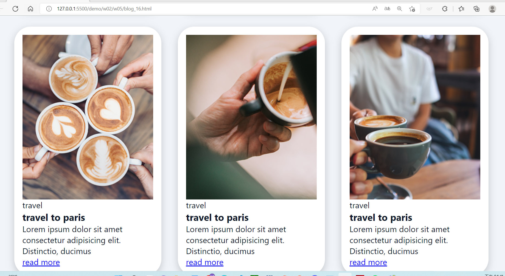
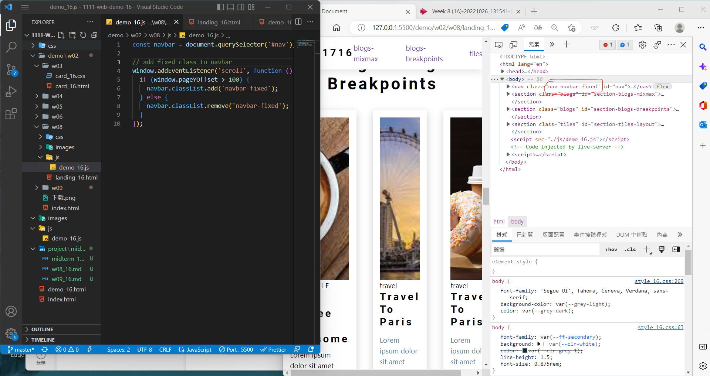
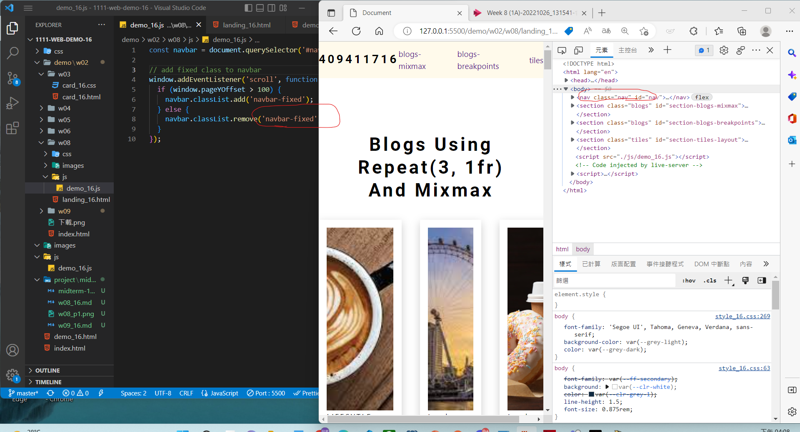
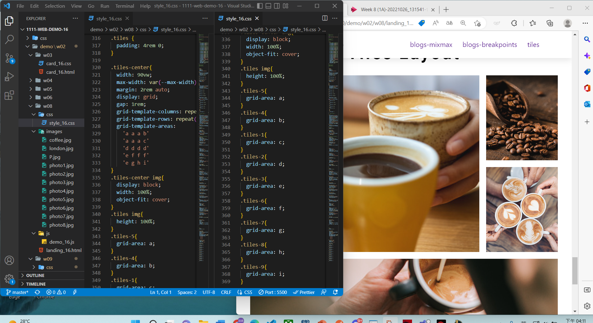
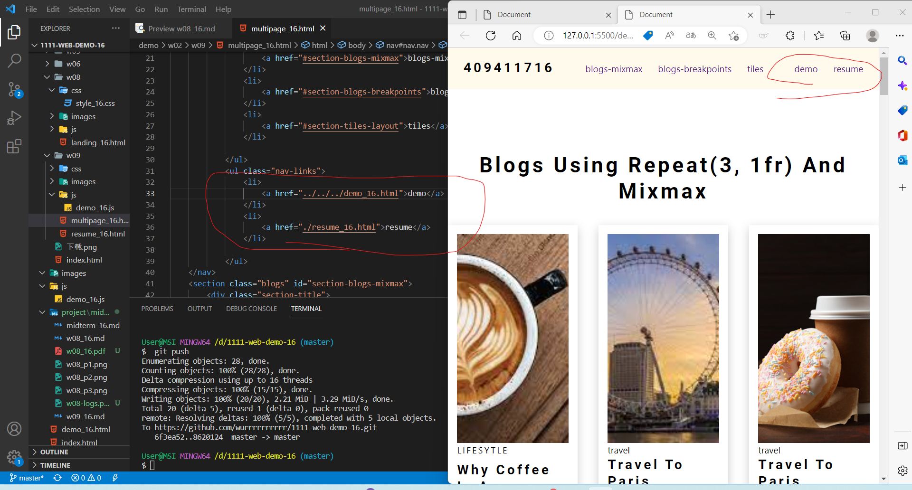
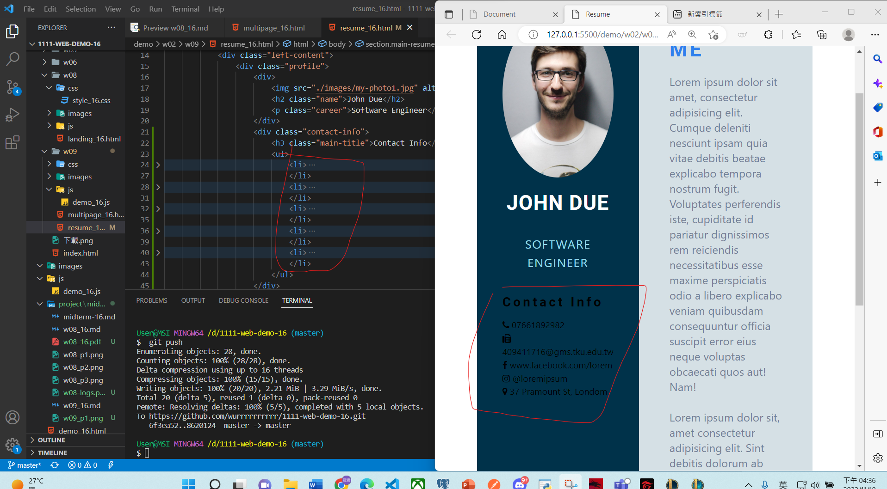

409411716
問題解決
自主學習
學習心得
問題解決
problem solution
思考這裡為什麼是這麼做,看看每個程式的關聯性,看看調了數據網頁會發生什麼變化找出其中的關聯
在不行的話就去找網路看看,找這個要怎麼實做出來看看別人是如何做出來得,試著參考看看
自主學習
選擇器

藉由點案的東西來給於值1~5,來決定要開的是哪個網頁
學習心得
在上課的過程中實在是從老師身上學到許多,想不到平常在用的網頁居然背後是如此龐大的工程我以為是非常輕易就能製作的,但我發現我錯了沒想到寫一個網頁居然如此的艱難,但隨著教授課程的耐心解說我逐漸去理解了網頁並深深著迷於此實在是太有趣了,讓我想在繼續接下上教授的課程








